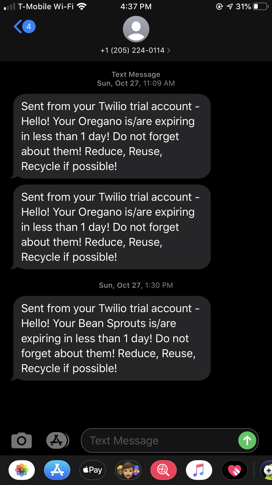

Eggspired
A web application project made in 36 hours at SD Hacks 2019
About the project
The idea behind this project was to create something that people use often, but not efficiently. With our goal in mind of focusing on sustainability, we had looked at things that people often overlook in everyday activities that amalgamate to be a bigger issue than someone may think on an individual basis.
People go to stores to buy items that they need, or rather that they think they need. A majority of people reported that they have had experiences where they have had to throw out and waste items because they had expired. On average, every year, this has caused approximately 1.3 billion tons of solely food to be wasted every year, not even mentioning the amount of money being wasted in natural resources.
Essentially, what we had come up with is something that most people use: a grocery list. However, we looked to expand upon this commodity by integrating it with an automated expiration tool that displayed the time and date of expiration as well as sending out a reminder text when that time was near. We believed that this would greatly reduce the amount of waste we produce as people often forget about certain items, or don't know how long it takes until expiration. As well as reducing the waste, it also saves users money while helping them stay organized.
How It Works
I had first created the bare front-end of the website with HTML, CSS, and JavaScript to function as a grocery list that was able to take user input of items and add them to the screen. The main functionality of the application comes from the back-end. First, we webscraped data from a website called eatbydate.com to create a database in mySQL of various grocery items and their corresponding expiration dates.

Using PHP, we connected our front-end to take user input of added grocery items and insert them into a separate part of our database.

When the user checks the item off of their list, we send a post request for that key name to find the matching value it takes until expiration. The time is then parsed into a date from the current time and displayed back on the bottom of the list.
I had connected the database to an automated system where the current time is checked against the expiration date. If the expiration is within a day or less, the program connects to Twilio and sends out a text message reminding the user of their specific item and that the expiration is near.
Reflections
We had found challenges coding the back end of the project as it was my first experience working with PHP and mySQL. We found ourselves stuck at parts where the data was not posting correctly as it was not properly connected to the front-end of our site. With the help of our mentor, we were able to move past this hurdle. Our team worked very hard to complete the project within the short time period allowed, and we feel very proud that we were successfully able to demo our project with the functionality we wanted.
Future improvements we wanted to work on included a secondary page to more easily differentiate the grocery list from already-purchased items. Also, we hoped to implement an auto-fill search bar that looked for items in the database of expiration dates. Finally, we wished to upload the application to a server and host it for users to actually use.
Thank you to our team: Quylan Mac, Parth Shah, Amy An, and Vedparkash Singh.
Thank you to our mentor: Oscar Pan
Citations: https://www.w3schools.com/ http://www.fao.org/nr/sustainability/food-loss-and-waste/en/ https://www.nrdc.org/media/2013/130918 https://shiftdesign.org/content/uploads/2014/09/Shift_Food-Waste-inisghts.pdf http://www.eatbydate.com/eggs-shelf-life-expiration-date// http://www.fao.org/save-food/resources/keyfindings/en/